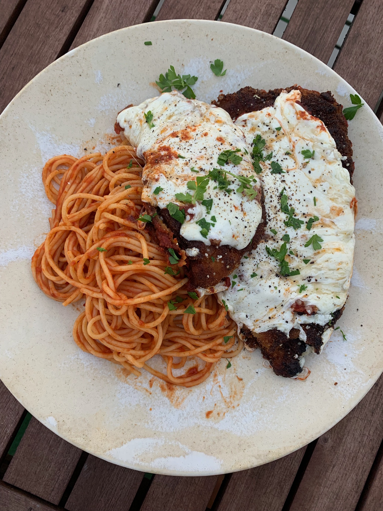

Chicken Parm w/ Homemade Sauce
Sauce Ingredients:
- 28oz Canned Tomato Purree
- 1/4 Cup Extra Virgin Olive Oil
- 1 Yellow Onion
- 8-10 Garlic Cloves
- 1 Tablespoon Tomato Paste
- 1 Teaspoon Red Pepper Flake
- 1 Teaspoon Oregano
- 1 Teaspoon Sugar
- Salt & Pepper to taste
Chicken Ingredients:
- 4 Chicken Breasts
- 2 Lemon
- 5 Garlic Cloves
- 1/4 Cup Vegetable Oil
- 4 Eggs
- 1 Tablespoon Garlic Powder
- 1 Tablespoon Onion Powder
- 1 Teaspoon Fresh Ground Black Pepper
- 4 Cups Panko
- 2 Cups All Purpose Flour
- 12 ounces Mozzarella
- 8 ounces Grated Parmesan
- Sprig Basil
Directions:
- Heat EVOO in a heavy pan or dutch oven
- Add diced onion and garlic, sautee
- Add tomato paste, stir together until darkened (about 5 minutes)
- Add canned tomato puree and sauce seasonings, including sugar
- Let simmer for 30 minutes
- While sauce is cooking, prepare chicken for frying
- Filet chicken breasts to 1/2" thick and flatten with a rolling pin (or wine bottle!)
- Squeeze lemon juice over chicken and top with finely chopped garlic
- Let rest 30 minutes
- In three seperate bowls, prepare flour and seasoning, beaten eggs, and panko
- Dip chicken in flour then coat with egg wash, before finishing in panko
- Heat vegetable oil in pan
- Fry chicken
- Remove chicken and top with sauce then sliced mozzzarella and grated parmesan
- Broil for 5 minutes unitl cheese is melted and slightly browned
- Remove and garnish with basil
Return Home